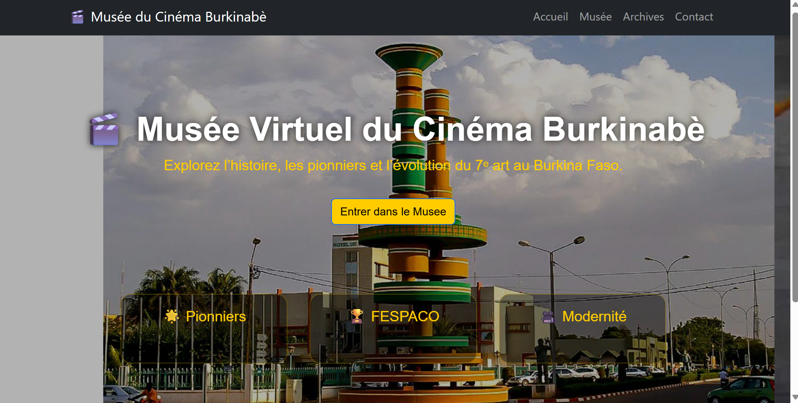
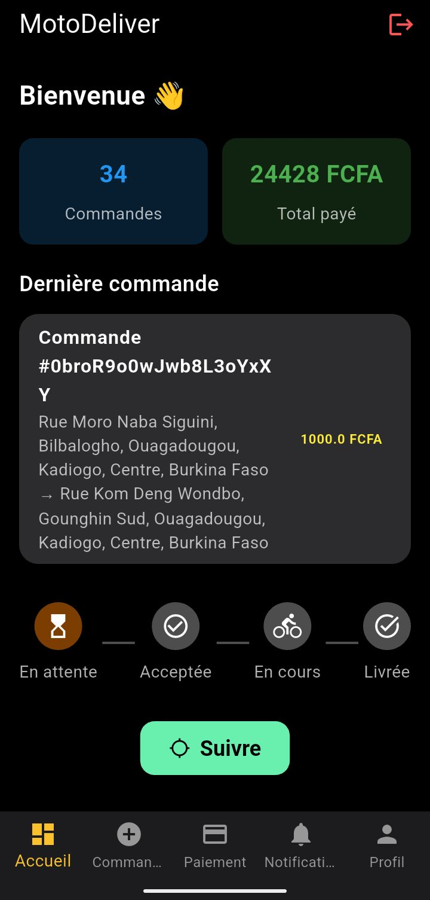

EXPÉRIENCE IMMERSIVE↗Ibam — Musée immersif
Une expérience numérique pour faire découvrir le patrimoine du cinéma burkinabè à travers des espaces 3D interactifs.
Explorer le dépôt ↗INDÉPENDANT · OUAGADOUGOU, BURKINA FASO
Développement logiciel, applications web & mobile et exploration de l’IA. Je construis des expériences numériques utiles, pensées pour le réel.
↓01 / L’APPROCHE
Je suis Clother Naba, développeur logiciel basé au Burkina Faso. J’aime concevoir des outils numériques qui simplifient le quotidien : de l’expérience utilisateur à l’architecture technique.
Mon approche mêle pragmatisme, curiosité et sens du détail — avec une attention particulière aux usages locaux, à la performance et à la maintenabilité.
Parlons de votre projet ↗02 / SÉLECTION DE PROJETS
Quelques pistes de mon travail : applications, expériences immersives et outils augmentés par la technologie.

EXPÉRIENCE IMMERSIVE↗Une expérience numérique pour faire découvrir le patrimoine du cinéma burkinabè à travers des espaces 3D interactifs.
Explorer le dépôt ↗
↗Une expérience de commande et de livraison conçue autour du suivi, de la géolocalisation et des besoins opérationnels.
Voir le projet ↗Exploration d’une architecture modulaire autour de la vision par ordinateur, de la reconnaissance et des services API réutilisables.
Voir le projet ↗Mon portfolio évolue vers une vitrine plus éditoriale et cinématique, avec des projets concrets et une navigation pensée pour le scroll.
Voir le code ↗Les projets sont présentés comme travaux en cours ou explorations lorsque leur état de production n’est pas confirmé.
CE QUI GUIDE MON TRAVAIL
La technologie n’est pas la destination.
C’est le moyen de faire mieux.
03 / EXPERTISE
HTML, CSS, JavaScript, React, Node.js
Flutter, intégration d’API, géolocalisation
Python, Django, REST, Firebase, Supabase
Vision par ordinateur, intégration de services IA, expérimentation
Git, GitHub, Postman, documentation et tests d’API
04 / PARCOURS
Université Joseph Ki-Zerbo — IFOAD · Génie logiciel
OpenClassrooms · JavaScript, React, Node.js, API REST et Git
Applications mobiles, plateformes web, outils IA et produits numériques.
05 / CONTACT
Projet, collaboration ou opportunité : parlons-en.
clothernaba7@gmail.com ↗